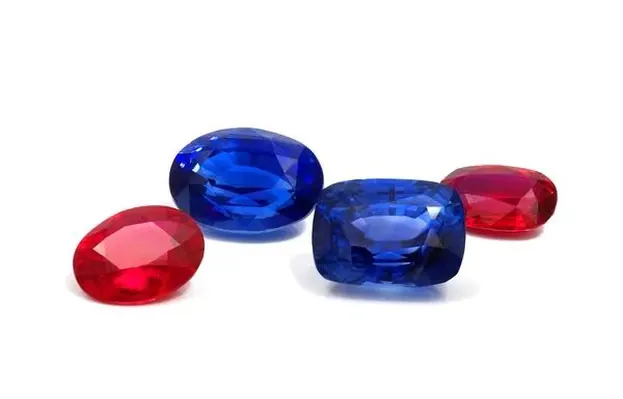

紅藍寶石的選購與投資指南
買紅藍寶石，先看色、再問燒、後要證書——順序錯了，錢就白花了。

核心定義
紅藍寶石的選購，本質是「用有限預算換取最大美感與保值性」的決策。核心順序：顏色第一、克拉第二、處理狀態第三、淨度第四、證書第五——這與鑽石的優先順序不同，因為彩色寶石的價值以「色」為王。
顏色是紅藍寶的靈魂：紅寶看「鴿血紅」與螢光、藍寶看「皇家藍/矢車菊藍」的濃豔與明亮。同一克拉下，色差一級價格可差數倍——先練眼睛，再掏錢包。
特徵與分類
| 考量 | 紅寶 | 藍寶 |
|---|---|---|
| 顏色 | 鴿血紅、豔而不暗 | 皇家藍/矢車菊、濃而亮 |
| 克拉 | 1ct 以上為佳 | 同級 |
| 處理 | 無燒優先（溢價高） | 無燒優先 |
| 淨度 | 美觀包裹體可接受 | 同左 |
| 證書 | GIA/SSEF/Gübelin | 同左 |
預算分配：預算有限時，先買「顏色漂亮的有燒寶石」而非「勉強入門的無燒」——美是第一印象，燒與不燒是價格差異，兩者要分開思考。
科學原理
選購的科學基礎是「可驗證性」：顏色要用標準光源比對（避免店家黃光誤導）；處理狀態要看實驗室證據；淨度要用十倍放大鏡檢查裂隙是否影響耐久。每一步都有工具與方法，不是憑感覺。
投資級紅藍寶的條件：無燒＋權威證書＋顏色達頂級色標＋克拉數達門檻（紅寶 2ct 以上、藍寶 5ct 以上較有收藏意義）＋來源可追溯。五者齊備，才是真正具備投資屬性的標的。
鑑定與鑑別方法
- 標準光源看顏色（自然光＋標準燈各一次）
- 十倍放大鏡查裂隙、包裹體與加熱痕跡
- 紫外燈測螢光（紅寶）
- 要求 GIA/SSEF/Gübelin 等權威證書
- 核對證書與實物（尺寸、重量）
- 高價品要求產地鑑定
市場行情與保養建議
行情趨勢：紅藍寶價格整體走揚，尤其無燒頂級品；緬甸紅寶與喀什米爾藍寶有產地溢價；莫三比克紅寶與馬達加斯加藍寶是性價比主流。投資紅藍寶，流動性低於黃金與白鑽，適合長線收藏而非短線操作。
最終提醒：紅藍寶石的投資報酬主要來自「稀有度與品質」的長期升值，而非短期交易。買你真心喜愛、品質過硬、證書齊全的那顆——它既是投資，也是陪伴。
常見誤區
彩色寶石的價值第一位是顏色。一顆 1 克拉鴿血紅可能貴過 3 克拉淡粉紅寶——先比色，再比重。
不同機構的標準寬嚴不同，市場認可度也不同。權威機構（GIA、SSEF、Gübelin、AGL）的證書，含金量與轉手接受度遠高於小機構。
冷知識
紅寶石超過 1 克拉的高品質標本已屬少見，5 克拉以上更是鳳毛麟角；藍寶相對大顆常見。同樣克拉，紅寶的「稀有溢價」更高。
拍賣成交價包含稀有性競價與敘事溢價，不能當作零售比價基準——參考行情要看批發與零售的「等級對照」。
反直覺觀點
無燒與有燒的頂級品，肉眼外觀可能難分高下——但無燒的稀有度與轉手價值是硬通貨。多付的錢買的是「地質原味」與「流通性」，不是那 5% 的顏色差異。
彩色寶石的二手流通遠不如鑽石與黃金，變現要靠拍賣或專業渠道，且要扣佣金。買之前先想好「十年後怎麼賣」——這才是投資的真正起點。